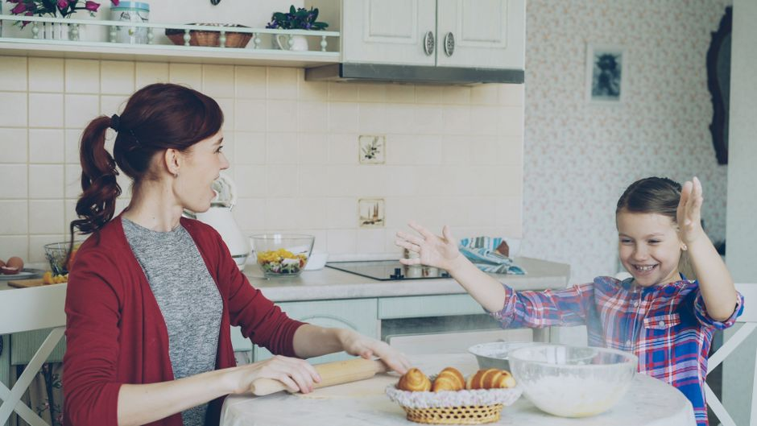
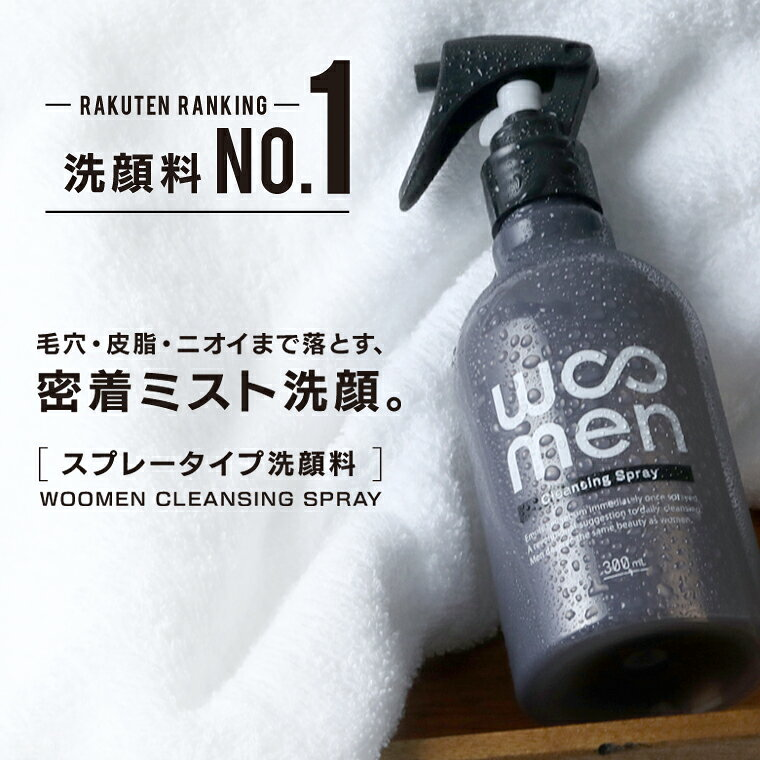
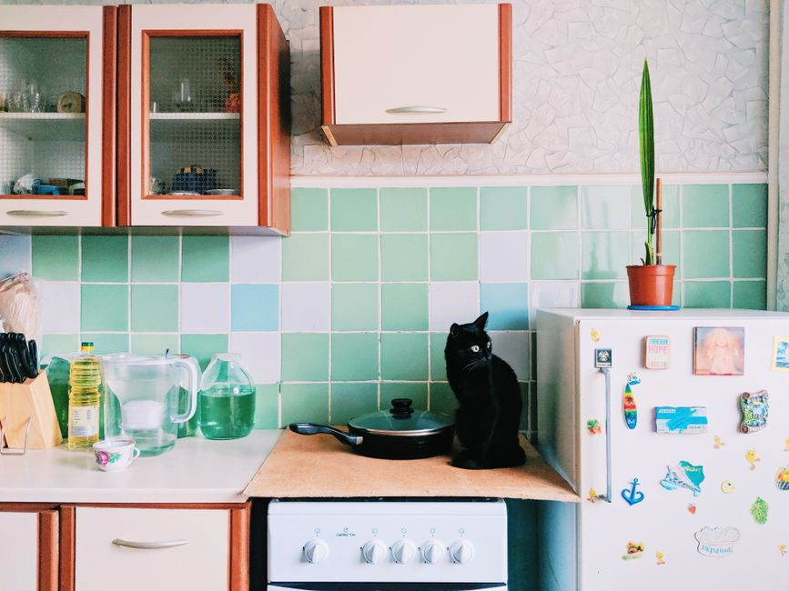
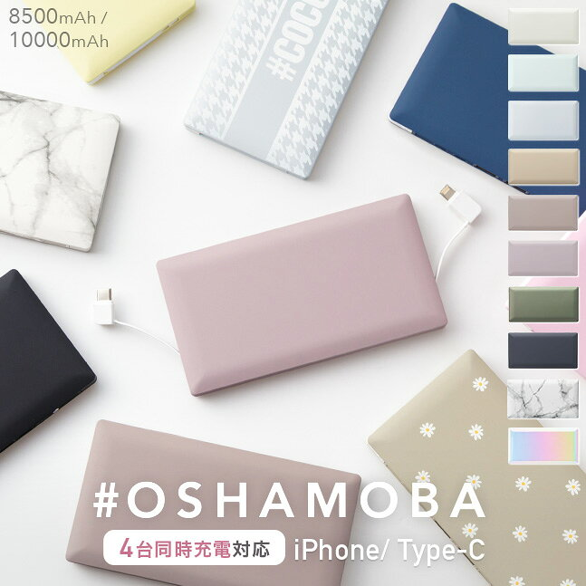

暮らしと、ちょっといいもの。
実際のレビューをもとに、暮らしを少し良くするアイテムと知恵をお届けします。

キッチン
まな板とフライパンを長持ちさせるお手入れ方法まとめ
木製・プラスチック製まな板とフッ素樹脂加工フライパンの正しい手入れ方法を紹介。着色汚れの落とし方や焦げつき対策など、道具を長く使うためのポイントをまとめました。
2026-09-11
-

メンズ美容 ・ PRメンズ美容おすすめ比較 洗顔・美容液・スキンケアセット3選
メンズ美容アイテムを探している方向けに、洗顔スプレー・美容液・スキンケアセットの3商品を価格とレビュー評価をもとに比較紹介します。
2026-09-10
-
 メンズ美容
メンズ美容
メンズスキンケアの基本 洗顔・保湿・身だしなみの整え方
スキンケア初心者の男性に向けて、洗顔・保湿の基本手順と、清潔感を上げる身だしなみの習慣をまとめました。
2026-09-10
-
 メンズ美容 ・ PR
メンズ美容 ・ PR
レビュー高評価のメンズコスメ3選 保湿ゲル・制汗剤・ファンデーション
楽天市場でレビュー評価の高いメンズコスメの中から、保湿ゲル・制汗剤・ファンデーションを実データをもとに紹介します。
2026-09-10
-

キッチンまな板とフライパンを長持ちさせる、毎日のお手入れの基本
まな板とフライパンを長く使うための、洗い方・乾かし方・使い分けの基本をまとめました。
2026-09-10
-

生活雑貨 ・ PR生活が少し便利になる雑貨3選 モバイルバッテリー・バスルーム収納
レビュー件数の多い便利グッズの中から、モバイルバッテリーとバスルーム収納ラックを実データをもとに紹介します。
2026-09-10